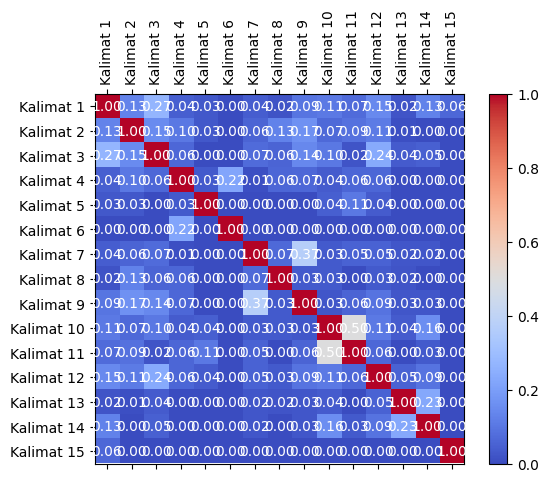
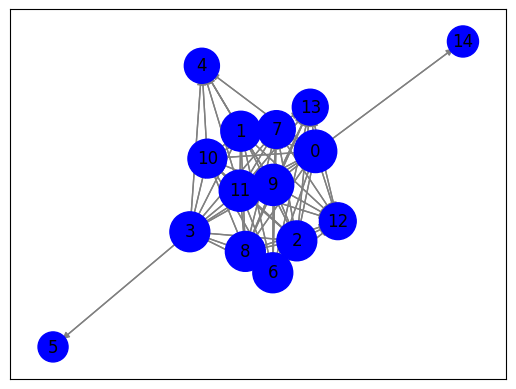
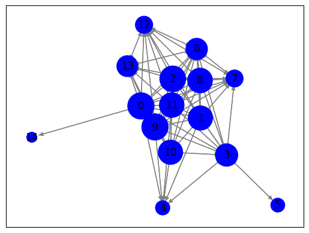

###Crawling 1 Berita
#melakukan web scraping pada halaman berita yang berasal dari URL
import requests
from bs4 import BeautifulSoup
import nltk
# Unduh konten halaman web berita
url = "https://www.antaranews.com/berita/3799398/mukti-ali-dituntut-6-tahun-penjara"
response = requests.get(url)
html = response.text
# Parsing halaman web menggunakan BeautifulSoup
soup = BeautifulSoup(html, 'html.parser')
# Ekstraksi teks dari elemen-elemen yang berisi berita
article = soup.find('div', class_="post-content clearfix") # Sesuaikan dengan struktur HTML halaman web berita
# Periksa apakah elemen article ada sebelum mencoba mengambil teksnya
if article is not None:
article_text = article.get_text()
# Tokenisasi teks menjadi kalimat menggunakan nltk
nltk.download('punkt') # Pastikan Anda sudah mengunduh tokenisasi kalimat nltk
sentences = nltk.sent_tokenize(article_text)
# Cetak kalimat-kalimat
for sentence in sentences:
print(sentence)
else:
print("Elemen berita tidak ditemukan")
Jakarta (ANTARA) - Jaksa penuntut umum (JPU) pada Kejaksaan Agung (Kejagung) RI menuntut Account Director of Integrated Account Departement PT Huawei Tech Investment Mukti Ali selama 6 tahun dan membayar denda Rp500 juta subsider 6 bulan pidana kurungan dalam perkara korupsi BTS 4G Kementerian Komunikasi dan Informatika (Kemenkominfo).
"Menjatuhkan pidana terhadap terdakwa Mukti Ali selama 6 tahun dikurangi sepenuhnya dengan lamanya terdakwa ditahan dengan perintah agar terdakwa tetap dilakukan penahanan di rutan," kata jaksa dalam persidangan di Pengadilan Tindak Pidana Korupsi (Tipikor) pada Pengadilan Negeri Jakarta Pusat, Senin.
Jaksa menyatakan bahwa terdakwa Mukti Ali terbukti secara sah dan meyakinkan bersalah menurut hukum turut serta dalam melakukan tindak pidana korupsi BTS 4G Kementerian Komunikasi dan Informatika (Kemenkominfo).
Mukti didakwa telah melanggar Pasal 2 ayat (1) juncto Pasal 18 Undang-Undang Nomor 31 Tahun 1999 tentang Pemberantasan Tindak Pidana Korupsi sebagaimana diubah dengan UU No.
20 Tahun 2001 jo.
Pasal 55 ayat (1) ke-1 KUHP.
Sementara itu, hal-hal yang memberatkan terdakwa adalah perbuatannya tidak mendukung program pemerintah dalam rangka penyelenggaraan negara yang bersih dari korupsi, kolusi, dan nepotisme.
"Perbuatan terdakwa bersama-sama dengan terdakwa lain telah mengakibatkan kerugian keuangan negara sebesar Rp8.032.084.133.795,51," ungkap jaksa.
Adapun hal-hal yang meringankan Mukti Ali adalah terdakwa belum pernah dihukum, bersikap sopan selama persidangan, dan tidak menikmati hasil dari tindak pidana korupsi.
Baca juga: Irwan Hermawan dituntut 6 tahun penjara terkait korupsi BTS 4G
Baca juga: Galumbang Menak dituntut 15 tahun penjara dalam kasus BTS 4G
Sidang tuntutan ini digelar bersamaan dengan tuntutan dua terdakwa lainnya, yakni Komisaris PT Solitech Media Sinergy Irwan Hermawan dan eks Direktur Utama PT Mora Telematika Indonesia Galumbang Menak Simanjuntak.
Irwan Hermawan dituntut pidana penjara selama 6 tahun, sementara Galumbang Menak dituntut 15 tahun.
Para terdakwa diduga melakukan tindak pidana korupsi penyediaan infrastruktur base transceiver station (BTS) 4G dan infrastruktur pendukung paket 1, 2, 3, 4, dan 5 BAKTI Kemenkominfo pada tahun 2020–2022.
Pada surat dakwaan disebutkan bahwa sejumlah pihak mendapat keuntungan dari proyek pembangunan tersebut, yaitu mantan Menteri Kominfo Johnny G. Plate menerima uang sebesar Rp17.848.308.000,00; mantan Direktur Utama Bakti Kominfo Anang Achmad Latif menerima uang Rp5 miliar; dan tenaga ahli Human Development Universitas Indonesia Yohan Suryanto menerima Rp453.608.400,00.
Selanjutnya, Irwan Hermawan selaku Komisaris PT Solitechmedia Sinergy menerima Rp119 miliar; Windi Purnama selaku Direktur PT Multimedia Berdikari Sejahtera menerima Rp500 juta; Muhammad Yusrizki selaku Direktur PT Basis Utama Prima menerima Rp50 miliar dan 2,5 juta dolar AS; Konsorsium FiberHome PT Telkominfra PT Multi Trans Data (PT MTD) untuk Paket 1 dan 2 menerima Rp2.940.870.824.490,00; Konsorsium Lintasarta Huawei SEI untuk paket 3 menerima Rp1.584.914.620.955,00; dan Konsorsium IBS dan ZTE Paket 4 dan 5 mendapat Rp3.504.518.715.600,00.Pewarta: Rivan Awal LinggaEditor: D.Dj.
Kliwantoro COPYRIGHT © ANTARA 2023
[nltk_data] Downloading package punkt to /root/nltk_data...
[nltk_data] Package punkt is already up-to-date!
#menghitung dan mencetak nilai TF-IDF (Term Frequency-Inverse Document Frequency)
#untuk setiap kata dalam setiap kalimat dari teks yang telah di-tokenisasi sebelumnya.
from sklearn.feature_extraction.text import TfidfVectorizer
# Inisialisasi penghitung TF-IDF
tfidf_vectorizer = TfidfVectorizer()
# Hitung TF-IDF
tfidf_matrix = tfidf_vectorizer.fit_transform(sentences)
# Daftar kata kunci
feature_names = tfidf_vectorizer.get_feature_names_out()
# Konversi matriks TF-IDF menjadi bentuk yang lebih mudah dibaca
tfidf_values = tfidf_matrix.toarray()
# Cetak TF-IDF untuk setiap kata dalam setiap kalimat
for i, sentence in enumerate(sentences):
print(f"Kalimat {i + 1}: {sentence}")
for j, word in enumerate(feature_names):
tfidf_value = tfidf_values[i][j]
if tfidf_value > 0:
print(f"{word}: {tfidf_value:.4f}")
print()
Kalimat 1:
Jakarta (ANTARA) - Jaksa penuntut umum (JPU) pada Kejaksaan Agung (Kejagung) RI menuntut Account Director of Integrated Account Departement PT Huawei Tech Investment Mukti Ali selama 6 tahun dan membayar denda Rp500 juta subsider 6 bulan pidana kurungan dalam perkara korupsi BTS 4G Kementerian Komunikasi dan Informatika (Kemenkominfo).
4g: 0.1156
account: 0.3291
agung: 0.1645
ali: 0.1156
antara: 0.1429
bts: 0.1156
bulan: 0.1645
dalam: 0.1058
dan: 0.1684
denda: 0.1645
departement: 0.1645
director: 0.1645
huawei: 0.1429
informatika: 0.1429
integrated: 0.1645
investment: 0.1645
jakarta: 0.1429
jaksa: 0.1156
jpu: 0.1645
juta: 0.1429
kejagung: 0.1645
kejaksaan: 0.1645
kemenkominfo: 0.1275
kementerian: 0.1429
komunikasi: 0.1429
korupsi: 0.0842
kurungan: 0.1645
membayar: 0.1645
menuntut: 0.1645
mukti: 0.1058
of: 0.1645
pada: 0.1156
penuntut: 0.1645
perkara: 0.1645
pidana: 0.0905
pt: 0.1275
ri: 0.1645
rp500: 0.1429
selama: 0.1156
subsider: 0.1645
tahun: 0.0905
tech: 0.1645
umum: 0.1645
Kalimat 2: "Menjatuhkan pidana terhadap terdakwa Mukti Ali selama 6 tahun dikurangi sepenuhnya dengan lamanya terdakwa ditahan dengan perintah agar terdakwa tetap dilakukan penahanan di rutan," kata jaksa dalam persidangan di Pengadilan Tindak Pidana Korupsi (Tipikor) pada Pengadilan Negeri Jakarta Pusat, Senin.
agar: 0.1662
ali: 0.1168
dalam: 0.1069
dengan: 0.2335
di: 0.3325
dikurangi: 0.1662
dilakukan: 0.1662
ditahan: 0.1662
jakarta: 0.1443
jaksa: 0.1168
kata: 0.1662
korupsi: 0.0850
lamanya: 0.1662
menjatuhkan: 0.1662
mukti: 0.1069
negeri: 0.1662
pada: 0.1168
penahanan: 0.1662
pengadilan: 0.3325
perintah: 0.1662
persidangan: 0.1443
pidana: 0.1828
pusat: 0.1662
rutan: 0.1662
selama: 0.1168
senin: 0.1662
sepenuhnya: 0.1662
tahun: 0.0914
terdakwa: 0.2742
terhadap: 0.1662
tetap: 0.1662
tindak: 0.1069
tipikor: 0.1662
Kalimat 3: Jaksa menyatakan bahwa terdakwa Mukti Ali terbukti secara sah dan meyakinkan bersalah menurut hukum turut serta dalam melakukan tindak pidana korupsi BTS 4G Kementerian Komunikasi dan Informatika (Kemenkominfo).
4g: 0.1591
ali: 0.1591
bahwa: 0.1966
bersalah: 0.2265
bts: 0.1591
dalam: 0.1457
dan: 0.2317
hukum: 0.2265
informatika: 0.1966
jaksa: 0.1591
kemenkominfo: 0.1755
kementerian: 0.1966
komunikasi: 0.1966
korupsi: 0.1159
melakukan: 0.1966
menurut: 0.2265
menyatakan: 0.2265
meyakinkan: 0.2265
mukti: 0.1457
pidana: 0.1245
sah: 0.2265
secara: 0.2265
serta: 0.2265
terbukti: 0.2265
terdakwa: 0.1245
tindak: 0.1457
turut: 0.2265
Kalimat 4: Mukti didakwa telah melanggar Pasal 2 ayat (1) juncto Pasal 18 Undang-Undang Nomor 31 Tahun 1999 tentang Pemberantasan Tindak Pidana Korupsi sebagaimana diubah dengan UU No.
18: 0.2054
1999: 0.2054
31: 0.2054
ayat: 0.1783
dengan: 0.1443
didakwa: 0.2054
diubah: 0.2054
juncto: 0.2054
korupsi: 0.1051
melanggar: 0.2054
mukti: 0.1321
no: 0.2054
nomor: 0.2054
pasal: 0.3566
pemberantasan: 0.2054
pidana: 0.1129
sebagaimana: 0.2054
tahun: 0.1129
telah: 0.1783
tentang: 0.2054
tindak: 0.1321
undang: 0.4107
uu: 0.2054
Kalimat 5: 20 Tahun 2001 jo.
20: 0.5503
2001: 0.5503
jo: 0.5503
tahun: 0.3026
Kalimat 6: Pasal 55 ayat (1) ke-1 KUHP.
55: 0.4710
ayat: 0.4090
ke: 0.4710
kuhp: 0.4710
pasal: 0.4090
Kalimat 7: Sementara itu, hal-hal yang memberatkan terdakwa adalah perbuatannya tidak mendukung program pemerintah dalam rangka penyelenggaraan negara yang bersih dari korupsi, kolusi, dan nepotisme.
adalah: 0.1856
bersih: 0.2137
dalam: 0.1375
dan: 0.1093
dari: 0.1656
hal: 0.3712
itu: 0.2137
kolusi: 0.2137
korupsi: 0.1093
memberatkan: 0.2137
mendukung: 0.2137
negara: 0.1856
nepotisme: 0.2137
pemerintah: 0.2137
penyelenggaraan: 0.2137
perbuatannya: 0.2137
program: 0.2137
rangka: 0.2137
sementara: 0.1856
terdakwa: 0.1175
tidak: 0.1856
yang: 0.3712
Kalimat 8: "Perbuatan terdakwa bersama-sama dengan terdakwa lain telah mengakibatkan kerugian keuangan negara sebesar Rp8.032.084.133.795,51," ungkap jaksa.
032: 0.2328
084: 0.2328
133: 0.2328
51: 0.2328
795: 0.2328
bersama: 0.2328
dengan: 0.1635
jaksa: 0.1635
kerugian: 0.2328
keuangan: 0.2328
lain: 0.2328
mengakibatkan: 0.2328
negara: 0.2021
perbuatan: 0.2328
rp8: 0.2328
sama: 0.2328
sebesar: 0.2021
telah: 0.2021
terdakwa: 0.2560
ungkap: 0.2328
Kalimat 9: Adapun hal-hal yang meringankan Mukti Ali adalah terdakwa belum pernah dihukum, bersikap sopan selama persidangan, dan tidak menikmati hasil dari tindak pidana korupsi.
adalah: 0.2015
adapun: 0.2320
ali: 0.1630
belum: 0.2320
bersikap: 0.2320
dan: 0.1187
dari: 0.1798
dihukum: 0.2320
hal: 0.4030
hasil: 0.2320
korupsi: 0.1187
menikmati: 0.2320
meringankan: 0.2320
mukti: 0.1492
pernah: 0.2320
persidangan: 0.2015
pidana: 0.1276
selama: 0.1630
sopan: 0.2320
terdakwa: 0.1276
tidak: 0.2015
tindak: 0.1492
yang: 0.2015
Kalimat 10: Baca juga: Irwan Hermawan dituntut 6 tahun penjara terkait korupsi BTS 4G
Baca juga: Galumbang Menak dituntut 15 tahun penjara dalam kasus BTS 4G
Sidang tuntutan ini digelar bersamaan dengan tuntutan dua terdakwa lainnya, yakni Komisaris PT Solitech Media Sinergy Irwan Hermawan dan eks Direktur Utama PT Mora Telematika Indonesia Galumbang Menak Simanjuntak.
15: 0.1146
4g: 0.1855
baca: 0.2640
bersamaan: 0.1320
bts: 0.1855
dalam: 0.0849
dan: 0.0675
dengan: 0.0927
digelar: 0.1320
direktur: 0.1023
dituntut: 0.2293
dua: 0.1320
eks: 0.1320
galumbang: 0.2293
hermawan: 0.2046
indonesia: 0.1146
ini: 0.1320
irwan: 0.2046
juga: 0.2640
kasus: 0.1320
komisaris: 0.1146
korupsi: 0.0675
lainnya: 0.1320
media: 0.1320
menak: 0.2293
mora: 0.1320
penjara: 0.2293
pt: 0.2046
sidang: 0.1320
simanjuntak: 0.1320
sinergy: 0.1146
solitech: 0.1320
tahun: 0.1452
telematika: 0.1320
terdakwa: 0.0726
terkait: 0.1320
tuntutan: 0.2640
utama: 0.1023
yakni: 0.1320
Kalimat 11: Irwan Hermawan dituntut pidana penjara selama 6 tahun, sementara Galumbang Menak dituntut 15 tahun.
15: 0.2747
dituntut: 0.5494
galumbang: 0.2747
hermawan: 0.2451
irwan: 0.2451
menak: 0.2747
penjara: 0.2747
pidana: 0.1739
selama: 0.2222
sementara: 0.2747
tahun: 0.3479
Kalimat 12: Para terdakwa diduga melakukan tindak pidana korupsi penyediaan infrastruktur base transceiver station (BTS) 4G dan infrastruktur pendukung paket 1, 2, 3, 4, dan 5 BAKTI Kemenkominfo pada tahun 2020–2022.
2020: 0.2238
2022: 0.2238
4g: 0.1572
bakti: 0.1943
base: 0.2238
bts: 0.1572
dan: 0.2289
diduga: 0.2238
infrastruktur: 0.4475
kemenkominfo: 0.1734
korupsi: 0.1145
melakukan: 0.1943
pada: 0.1572
paket: 0.1943
para: 0.2238
pendukung: 0.2238
penyediaan: 0.2238
pidana: 0.1230
station: 0.2238
tahun: 0.1230
terdakwa: 0.1230
tindak: 0.1439
transceiver: 0.2238
Kalimat 13: Pada surat dakwaan disebutkan bahwa sejumlah pihak mendapat keuntungan dari proyek pembangunan tersebut, yaitu mantan Menteri Kominfo Johnny G. Plate menerima uang sebesar Rp17.848.308.000,00; mantan Direktur Utama Bakti Kominfo Anang Achmad Latif menerima uang Rp5 miliar; dan tenaga ahli Human Development Universitas Indonesia Yohan Suryanto menerima Rp453.608.400,00.
00: 0.2244
000: 0.1292
308: 0.1292
400: 0.1292
608: 0.1292
848: 0.1292
achmad: 0.1292
ahli: 0.1292
anang: 0.1292
bahwa: 0.1122
bakti: 0.1122
dakwaan: 0.1292
dan: 0.0661
dari: 0.1001
development: 0.1292
direktur: 0.1001
disebutkan: 0.1292
human: 0.1292
indonesia: 0.1122
johnny: 0.1292
keuntungan: 0.1292
kominfo: 0.2585
latif: 0.1292
mantan: 0.2585
mendapat: 0.1122
menerima: 0.3366
menteri: 0.1292
miliar: 0.1122
pada: 0.0908
pembangunan: 0.1292
pihak: 0.1292
plate: 0.1292
proyek: 0.1292
rp17: 0.1292
rp453: 0.1292
rp5: 0.1292
sebesar: 0.1122
sejumlah: 0.1292
surat: 0.1292
suryanto: 0.1292
tenaga: 0.1292
tersebut: 0.1292
uang: 0.2585
universitas: 0.1292
utama: 0.1001
yaitu: 0.1292
yohan: 0.1292
Kalimat 14: Selanjutnya, Irwan Hermawan selaku Komisaris PT Solitechmedia Sinergy menerima Rp119 miliar; Windi Purnama selaku Direktur PT Multimedia Berdikari Sejahtera menerima Rp500 juta; Muhammad Yusrizki selaku Direktur PT Basis Utama Prima menerima Rp50 miliar dan 2,5 juta dolar AS; Konsorsium FiberHome PT Telkominfra PT Multi Trans Data (PT MTD) untuk Paket 1 dan 2 menerima Rp2.940.870.824.490,00; Konsorsium Lintasarta Huawei SEI untuk paket 3 menerima Rp1.584.914.620.955,00; dan Konsorsium IBS dan ZTE Paket 4 dan 5 mendapat Rp3.504.518.715.600,00.Pewarta: Rivan Awal LinggaEditor: D.Dj.
00: 0.2189
490: 0.0840
504: 0.0840
518: 0.0840
584: 0.0840
600: 0.0840
620: 0.0840
715: 0.0840
824: 0.0840
870: 0.0840
914: 0.0840
940: 0.0840
955: 0.0840
as: 0.0840
awal: 0.0840
basis: 0.0840
berdikari: 0.0840
dan: 0.2150
data: 0.0840
direktur: 0.1302
dj: 0.0840
dolar: 0.0840
fiberhome: 0.0840
hermawan: 0.0651
huawei: 0.0730
ibs: 0.0840
irwan: 0.0651
juta: 0.1459
komisaris: 0.0730
konsorsium: 0.2521
linggaeditor: 0.0840
lintasarta: 0.0840
mendapat: 0.0730
menerima: 0.3649
miliar: 0.1459
mtd: 0.0840
muhammad: 0.0840
multi: 0.0840
multimedia: 0.0840
paket: 0.2189
pewarta: 0.0840
prima: 0.0840
pt: 0.3907
purnama: 0.0840
rivan: 0.0840
rp1: 0.0840
rp119: 0.0840
rp2: 0.0840
rp3: 0.0840
rp50: 0.0840
rp500: 0.0730
sei: 0.0840
sejahtera: 0.0840
selaku: 0.2521
selanjutnya: 0.0840
sinergy: 0.0730
solitechmedia: 0.0840
telkominfra: 0.0840
trans: 0.0840
untuk: 0.1681
utama: 0.0651
windi: 0.0840
yusrizki: 0.0840
zte: 0.0840
Kalimat 15: Kliwantoro COPYRIGHT © ANTARA 2023
2023: 0.5161
antara: 0.4482
copyright: 0.5161
kliwantoro: 0.5161
#menghitung kemiripan kosinus (cosine similarity) antara dua kalimat berdasarkan vektor representasi TF-IDF dari masing-masing kalimat.
from sklearn.metrics.pairwise import cosine_similarity
from sklearn.feature_extraction.text import TfidfVectorizer
# Indeks kalimat yang akan dibandingkan
sentence1_index = 0 # Ganti dengan indeks kalimat pertama yang ingin Anda bandingkan
sentence2_index = 1 # Ganti dengan indeks kalimat kedua yang ingin Anda bandingkan
# Ambil vektor TF-IDF untuk kedua kalimat
tfidf_vector1 = tfidf_matrix[sentence1_index]
tfidf_vector2 = tfidf_matrix[sentence2_index]
# Hitung cosine similarity antara kedua vektor
similarity = cosine_similarity(tfidf_vector1, tfidf_vector2)
# Cetak hasil cosine similarity
print(f"Cosine Similarity antara Kalimat {sentence1_index + 1} dan Kalimat {sentence2_index + 1}: {similarity[0][0]:.4f}")
Cosine Similarity antara Kalimat 1 dan Kalimat 2: 0.1292
#menghitung dan mencetak kemiripan kosinus (cosine similarity) antara semua pasangan kalimat dalam teks yang telah di-tokenisasi
# Matriks TF-IDF telah dihitung sebelumnya (tfidf_matrix)
# Hitung cosine similarity antara semua pasangan kalimat
similarity_matrix = cosine_similarity(tfidf_matrix, tfidf_matrix)
# Cetak hasil similarity_matrix
num_sentences = len(sentences) # Jumlah kalimat
for i in range(num_sentences):
for j in range(i+1, num_sentences):
similarity = similarity_matrix[i][j]
print(f"Cosine Similarity antara Kalimat {i + 1} dan Kalimat {j + 1}: {similarity:.4f}")
Cosine Similarity antara Kalimat 1 dan Kalimat 2: 0.1292
Cosine Similarity antara Kalimat 1 dan Kalimat 3: 0.2711
Cosine Similarity antara Kalimat 1 dan Kalimat 4: 0.0433
Cosine Similarity antara Kalimat 1 dan Kalimat 5: 0.0274
Cosine Similarity antara Kalimat 1 dan Kalimat 6: 0.0000
Cosine Similarity antara Kalimat 1 dan Kalimat 7: 0.0422
Cosine Similarity antara Kalimat 1 dan Kalimat 8: 0.0189
Cosine Similarity antara Kalimat 1 dan Kalimat 9: 0.0950
Cosine Similarity antara Kalimat 1 dan Kalimat 10: 0.1081
Cosine Similarity antara Kalimat 1 dan Kalimat 11: 0.0729
Cosine Similarity antara Kalimat 1 dan Kalimat 12: 0.1471
Cosine Similarity antara Kalimat 1 dan Kalimat 13: 0.0216
Cosine Similarity antara Kalimat 1 dan Kalimat 14: 0.1277
Cosine Similarity antara Kalimat 1 dan Kalimat 15: 0.0640
Cosine Similarity antara Kalimat 2 dan Kalimat 3: 0.1506
Cosine Similarity antara Kalimat 2 dan Kalimat 4: 0.1018
Cosine Similarity antara Kalimat 2 dan Kalimat 5: 0.0277
Cosine Similarity antara Kalimat 2 dan Kalimat 6: 0.0000
Cosine Similarity antara Kalimat 2 dan Kalimat 7: 0.0562
Cosine Similarity antara Kalimat 2 dan Kalimat 8: 0.1275
Cosine Similarity antara Kalimat 2 dan Kalimat 9: 0.1675
Cosine Similarity antara Kalimat 2 dan Kalimat 10: 0.0697
Cosine Similarity antara Kalimat 2 dan Kalimat 11: 0.0895
Cosine Similarity antara Kalimat 2 dan Kalimat 12: 0.1109
Cosine Similarity antara Kalimat 2 dan Kalimat 13: 0.0106
Cosine Similarity antara Kalimat 2 dan Kalimat 14: 0.0000
Cosine Similarity antara Kalimat 2 dan Kalimat 15: 0.0000
Cosine Similarity antara Kalimat 3 dan Kalimat 4: 0.0647
Cosine Similarity antara Kalimat 3 dan Kalimat 5: 0.0000
Cosine Similarity antara Kalimat 3 dan Kalimat 6: 0.0000
Cosine Similarity antara Kalimat 3 dan Kalimat 7: 0.0727
Cosine Similarity antara Kalimat 3 dan Kalimat 8: 0.0579
Cosine Similarity antara Kalimat 3 dan Kalimat 9: 0.1424
Cosine Similarity antara Kalimat 3 dan Kalimat 10: 0.1039
Cosine Similarity antara Kalimat 3 dan Kalimat 11: 0.0217
Cosine Similarity antara Kalimat 3 dan Kalimat 12: 0.2366
Cosine Similarity antara Kalimat 3 dan Kalimat 13: 0.0374
Cosine Similarity antara Kalimat 3 dan Kalimat 14: 0.0498
Cosine Similarity antara Kalimat 3 dan Kalimat 15: 0.0000
Cosine Similarity antara Kalimat 4 dan Kalimat 5: 0.0342
Cosine Similarity antara Kalimat 4 dan Kalimat 6: 0.2188
Cosine Similarity antara Kalimat 4 dan Kalimat 7: 0.0115
Cosine Similarity antara Kalimat 4 dan Kalimat 8: 0.0596
Cosine Similarity antara Kalimat 4 dan Kalimat 9: 0.0663
Cosine Similarity antara Kalimat 4 dan Kalimat 10: 0.0369
Cosine Similarity antara Kalimat 4 dan Kalimat 11: 0.0589
Cosine Similarity antara Kalimat 4 dan Kalimat 12: 0.0588
Cosine Similarity antara Kalimat 4 dan Kalimat 13: 0.0000
Cosine Similarity antara Kalimat 4 dan Kalimat 14: 0.0000
Cosine Similarity antara Kalimat 4 dan Kalimat 15: 0.0000
Cosine Similarity antara Kalimat 5 dan Kalimat 6: 0.0000
Cosine Similarity antara Kalimat 5 dan Kalimat 7: 0.0000
Cosine Similarity antara Kalimat 5 dan Kalimat 8: 0.0000
Cosine Similarity antara Kalimat 5 dan Kalimat 9: 0.0000
Cosine Similarity antara Kalimat 5 dan Kalimat 10: 0.0439
Cosine Similarity antara Kalimat 5 dan Kalimat 11: 0.1053
Cosine Similarity antara Kalimat 5 dan Kalimat 12: 0.0372
Cosine Similarity antara Kalimat 5 dan Kalimat 13: 0.0000
Cosine Similarity antara Kalimat 5 dan Kalimat 14: 0.0000
Cosine Similarity antara Kalimat 5 dan Kalimat 15: 0.0000
Cosine Similarity antara Kalimat 6 dan Kalimat 7: 0.0000
Cosine Similarity antara Kalimat 6 dan Kalimat 8: 0.0000
Cosine Similarity antara Kalimat 6 dan Kalimat 9: 0.0000
Cosine Similarity antara Kalimat 6 dan Kalimat 10: 0.0000
Cosine Similarity antara Kalimat 6 dan Kalimat 11: 0.0000
Cosine Similarity antara Kalimat 6 dan Kalimat 12: 0.0000
Cosine Similarity antara Kalimat 6 dan Kalimat 13: 0.0000
Cosine Similarity antara Kalimat 6 dan Kalimat 14: 0.0000
Cosine Similarity antara Kalimat 6 dan Kalimat 15: 0.0000
Cosine Similarity antara Kalimat 7 dan Kalimat 8: 0.0676
Cosine Similarity antara Kalimat 7 dan Kalimat 9: 0.3699
Cosine Similarity antara Kalimat 7 dan Kalimat 10: 0.0350
Cosine Similarity antara Kalimat 7 dan Kalimat 11: 0.0510
Cosine Similarity antara Kalimat 7 dan Kalimat 12: 0.0520
Cosine Similarity antara Kalimat 7 dan Kalimat 13: 0.0238
Cosine Similarity antara Kalimat 7 dan Kalimat 14: 0.0235
Cosine Similarity antara Kalimat 7 dan Kalimat 15: 0.0000
Cosine Similarity antara Kalimat 8 dan Kalimat 9: 0.0327
Cosine Similarity antara Kalimat 8 dan Kalimat 10: 0.0337
Cosine Similarity antara Kalimat 8 dan Kalimat 11: 0.0000
Cosine Similarity antara Kalimat 8 dan Kalimat 12: 0.0315
Cosine Similarity antara Kalimat 8 dan Kalimat 13: 0.0227
Cosine Similarity antara Kalimat 8 dan Kalimat 14: 0.0000
Cosine Similarity antara Kalimat 8 dan Kalimat 15: 0.0000
Cosine Similarity antara Kalimat 9 dan Kalimat 10: 0.0253
Cosine Similarity antara Kalimat 9 dan Kalimat 11: 0.0584
Cosine Similarity antara Kalimat 9 dan Kalimat 12: 0.0936
Cosine Similarity antara Kalimat 9 dan Kalimat 13: 0.0259
Cosine Similarity antara Kalimat 9 dan Kalimat 14: 0.0255
Cosine Similarity antara Kalimat 9 dan Kalimat 15: 0.0000
Cosine Similarity antara Kalimat 10 dan Kalimat 11: 0.4972
Cosine Similarity antara Kalimat 10 dan Kalimat 12: 0.1083
Cosine Similarity antara Kalimat 10 dan Kalimat 13: 0.0378
Cosine Similarity antara Kalimat 10 dan Kalimat 14: 0.1578
Cosine Similarity antara Kalimat 10 dan Kalimat 15: 0.0000
Cosine Similarity antara Kalimat 11 dan Kalimat 12: 0.0642
Cosine Similarity antara Kalimat 11 dan Kalimat 13: 0.0000
Cosine Similarity antara Kalimat 11 dan Kalimat 14: 0.0319
Cosine Similarity antara Kalimat 11 dan Kalimat 15: 0.0000
Cosine Similarity antara Kalimat 12 dan Kalimat 13: 0.0512
Cosine Similarity antara Kalimat 12 dan Kalimat 14: 0.0918
Cosine Similarity antara Kalimat 12 dan Kalimat 15: 0.0000
Cosine Similarity antara Kalimat 13 dan Kalimat 14: 0.2303
Cosine Similarity antara Kalimat 13 dan Kalimat 15: 0.0000
Cosine Similarity antara Kalimat 14 dan Kalimat 15: 0.0000
#membuat dan mencetak DataFrame menggunakan hasil perhitungan cosine similarity antara semua pasangan kalimat dalam teks yang telah di-tokenisasi dan matriks TF-IDF
import pandas as pd
# Matriks TF-IDF telah dihitung sebelumnya (tfidf_matrix)
# Hitung cosine similarity antara semua pasangan kalimat
similarity_matrix = cosine_similarity(tfidf_matrix, tfidf_matrix)
# Nama kolom dan indeks untuk DataFrame
sentence_indices = [f"Kalimat {i + 1}" for i in range(len(sentences))]
# Buat DataFrame dari hasil cosine similarity
df = pd.DataFrame(similarity_matrix, columns=sentence_indices, index=sentence_indices)
# Cetak DataFrame
df
| Kalimat 1 | Kalimat 2 | Kalimat 3 | Kalimat 4 | Kalimat 5 | Kalimat 6 | Kalimat 7 | Kalimat 8 | Kalimat 9 | Kalimat 10 | Kalimat 11 | Kalimat 12 | Kalimat 13 | Kalimat 14 | Kalimat 15 | |
|---|---|---|---|---|---|---|---|---|---|---|---|---|---|---|---|
| Kalimat 1 | 1.000000 | 0.129207 | 0.271076 | 0.043256 | 0.027373 | 0.000000 | 0.042166 | 0.018898 | 0.094991 | 0.108141 | 0.072895 | 0.147054 | 0.021622 | 0.127719 | 0.064034 |
| Kalimat 2 | 0.129207 | 1.000000 | 0.150629 | 0.101831 | 0.027653 | 0.000000 | 0.056223 | 0.127453 | 0.167452 | 0.069650 | 0.089537 | 0.110944 | 0.010599 | 0.000000 | 0.000000 |
| Kalimat 3 | 0.271076 | 0.150629 | 1.000000 | 0.064716 | 0.000000 | 0.000000 | 0.072666 | 0.057879 | 0.142434 | 0.103891 | 0.021658 | 0.236561 | 0.037383 | 0.049808 | 0.000000 |
| Kalimat 4 | 0.043256 | 0.101831 | 0.064716 | 1.000000 | 0.034163 | 0.218788 | 0.011488 | 0.059628 | 0.066306 | 0.036865 | 0.058920 | 0.058823 | 0.000000 | 0.000000 | 0.000000 |
| Kalimat 5 | 0.027373 | 0.027653 | 0.000000 | 0.034163 | 1.000000 | 0.000000 | 0.000000 | 0.000000 | 0.000000 | 0.043924 | 0.105255 | 0.037224 | 0.000000 | 0.000000 | 0.000000 |
| Kalimat 6 | 0.000000 | 0.000000 | 0.000000 | 0.218788 | 0.000000 | 1.000000 | 0.000000 | 0.000000 | 0.000000 | 0.000000 | 0.000000 | 0.000000 | 0.000000 | 0.000000 | 0.000000 |
| Kalimat 7 | 0.042166 | 0.056223 | 0.072666 | 0.011488 | 0.000000 | 0.000000 | 1.000000 | 0.067593 | 0.369886 | 0.034976 | 0.050985 | 0.052010 | 0.023815 | 0.023506 | 0.000000 |
| Kalimat 8 | 0.018898 | 0.127453 | 0.057879 | 0.059628 | 0.000000 | 0.000000 | 0.067593 | 1.000000 | 0.032653 | 0.033741 | 0.000000 | 0.031490 | 0.022679 | 0.000000 | 0.000000 |
| Kalimat 9 | 0.094991 | 0.167452 | 0.142434 | 0.066306 | 0.000000 | 0.000000 | 0.369886 | 0.032653 | 1.000000 | 0.025293 | 0.058409 | 0.093636 | 0.025852 | 0.025516 | 0.000000 |
| Kalimat 10 | 0.108141 | 0.069650 | 0.103891 | 0.036865 | 0.043924 | 0.000000 | 0.034976 | 0.033741 | 0.025293 | 1.000000 | 0.497215 | 0.108290 | 0.037817 | 0.157833 | 0.000000 |
| Kalimat 11 | 0.072895 | 0.089537 | 0.021658 | 0.058920 | 0.105255 | 0.000000 | 0.050985 | 0.000000 | 0.058409 | 0.497215 | 1.000000 | 0.064199 | 0.000000 | 0.031930 | 0.000000 |
| Kalimat 12 | 0.147054 | 0.110944 | 0.236561 | 0.058823 | 0.037224 | 0.000000 | 0.052010 | 0.031490 | 0.093636 | 0.108290 | 0.064199 | 1.000000 | 0.051206 | 0.091752 | 0.000000 |
| Kalimat 13 | 0.021622 | 0.010599 | 0.037383 | 0.000000 | 0.000000 | 0.000000 | 0.023815 | 0.022679 | 0.025852 | 0.037817 | 0.000000 | 0.051206 | 1.000000 | 0.230301 | 0.000000 |
| Kalimat 14 | 0.127719 | 0.000000 | 0.049808 | 0.000000 | 0.000000 | 0.000000 | 0.023506 | 0.000000 | 0.025516 | 0.157833 | 0.031930 | 0.091752 | 0.230301 | 1.000000 | 0.000000 |
| Kalimat 15 | 0.064034 | 0.000000 | 0.000000 | 0.000000 | 0.000000 | 0.000000 | 0.000000 | 0.000000 | 0.000000 | 0.000000 | 0.000000 | 0.000000 | 0.000000 | 0.000000 | 1.000000 |
#membuat dan menampilkan grafik matriks yang menggambarkan cosine similarity antara semua pasangan kalimat dalam teks yang telah di-tokenisasi
import pandas as pd
import numpy as np
import matplotlib.pyplot as plt
# Matriks TF-IDF telah dihitung sebelumnya (tfidf_matrix)
# Hitung cosine similarity antara semua pasangan kalimat
similarity_matrix = cosine_similarity(tfidf_matrix, tfidf_matrix)
# Nama kolom dan indeks untuk DataFrame
sentence_indices = [f"Kalimat {i + 1}" for i in range(len(sentences))]
# Buat DataFrame dari hasil cosine similarity
df = pd.DataFrame(similarity_matrix, columns=sentence_indices, index=sentence_indices)
# Membuat grafik matriks
fig, ax = plt.subplots()
cax = ax.matshow(df, cmap='coolwarm')
fig.colorbar(cax)
# Memberi label pada sumbu X dan Y
ax.set_xticks(np.arange(len(df.columns)))
ax.set_yticks(np.arange(len(df.index)))
ax.set_xticklabels(df.columns, rotation=90)
ax.set_yticklabels(df.index)
# Menampilkan nilai similarity pada matriks
for i in range(len(df.index)):
for j in range(len(df.columns)):
text = ax.text(j, i, f'{df.iat[i, j]:.2f}', ha='center', va='center', color='w')
plt.show()

#membangun sebuah graf yang merepresentasikan hubungan antara kalimat dalam teks berdasarkan kemiripan (similarity) antara kalimat-kalimat tersebut.
import networkx as nx
# Buat grafik dari matriks similarity
G = nx.Graph()
# Tambahkan simpul (node) ke grafik yang mewakili setiap kalimat
for sentence in sentences:
G.add_node(sentence)
# Tambahkan tepi (edge) antara kalimat berdasarkan similarity
for i in range(len(sentences)):
for j in range(i + 1, len(sentences)):
similarity = df.iloc[i, j] # Mengambil similarity dari DataFrame
if similarity > 0:
G.add_edge(sentences[i], sentences[j], weight=similarity)
# Hitung closeness centrality untuk setiap simpul
closeness_centrality = nx.closeness_centrality(G, distance='weight')
# Cetak closeness centrality
for sentence, centrality in closeness_centrality.items():
print(f"Closeness Centrality of {sentence}: {centrality:.4f}")
Closeness Centrality of
Jakarta (ANTARA) - Jaksa penuntut umum (JPU) pada Kejaksaan Agung (Kejagung) RI menuntut Account Director of Integrated Account Departement PT Huawei Tech Investment Mukti Ali selama 6 tahun dan membayar denda Rp500 juta subsider 6 bulan pidana kurungan dalam perkara korupsi BTS 4G Kementerian Komunikasi dan Informatika (Kemenkominfo).: 16.2850
Closeness Centrality of "Menjatuhkan pidana terhadap terdakwa Mukti Ali selama 6 tahun dikurangi sepenuhnya dengan lamanya terdakwa ditahan dengan perintah agar terdakwa tetap dilakukan penahanan di rutan," kata jaksa dalam persidangan di Pengadilan Tindak Pidana Korupsi (Tipikor) pada Pengadilan Negeri Jakarta Pusat, Senin.: 16.1433
Closeness Centrality of Jaksa menyatakan bahwa terdakwa Mukti Ali terbukti secara sah dan meyakinkan bersalah menurut hukum turut serta dalam melakukan tindak pidana korupsi BTS 4G Kementerian Komunikasi dan Informatika (Kemenkominfo).: 12.6570
Closeness Centrality of Mukti didakwa telah melanggar Pasal 2 ayat (1) juncto Pasal 18 Undang-Undang Nomor 31 Tahun 1999 tentang Pemberantasan Tindak Pidana Korupsi sebagaimana diubah dengan UU No.: 16.1105
Closeness Centrality of 20 Tahun 2001 jo.: 14.7859
Closeness Centrality of Pasal 55 ayat (1) ke-1 KUHP.: 3.7703
Closeness Centrality of Sementara itu, hal-hal yang memberatkan terdakwa adalah perbuatannya tidak mendukung program pemerintah dalam rangka penyelenggaraan negara yang bersih dari korupsi, kolusi, dan nepotisme.: 17.2371
Closeness Centrality of "Perbuatan terdakwa bersama-sama dengan terdakwa lain telah mengakibatkan kerugian keuangan negara sebesar Rp8.032.084.133.795,51," ungkap jaksa.: 15.9313
Closeness Centrality of Adapun hal-hal yang meringankan Mukti Ali adalah terdakwa belum pernah dihukum, bersikap sopan selama persidangan, dan tidak menikmati hasil dari tindak pidana korupsi.: 14.8541
Closeness Centrality of Baca juga: Irwan Hermawan dituntut 6 tahun penjara terkait korupsi BTS 4G
Baca juga: Galumbang Menak dituntut 15 tahun penjara dalam kasus BTS 4G
Sidang tuntutan ini digelar bersamaan dengan tuntutan dua terdakwa lainnya, yakni Komisaris PT Solitech Media Sinergy Irwan Hermawan dan eks Direktur Utama PT Mora Telematika Indonesia Galumbang Menak Simanjuntak.: 14.5837
Closeness Centrality of Irwan Hermawan dituntut pidana penjara selama 6 tahun, sementara Galumbang Menak dituntut 15 tahun.: 12.1033
Closeness Centrality of Para terdakwa diduga melakukan tindak pidana korupsi penyediaan infrastruktur base transceiver station (BTS) 4G dan infrastruktur pendukung paket 1, 2, 3, 4, dan 5 BAKTI Kemenkominfo pada tahun 2020–2022.: 12.8449
Closeness Centrality of Pada surat dakwaan disebutkan bahwa sejumlah pihak mendapat keuntungan dari proyek pembangunan tersebut, yaitu mantan Menteri Kominfo Johnny G. Plate menerima uang sebesar Rp17.848.308.000,00; mantan Direktur Utama Bakti Kominfo Anang Achmad Latif menerima uang Rp5 miliar; dan tenaga ahli Human Development Universitas Indonesia Yohan Suryanto menerima Rp453.608.400,00.: 18.6508
Closeness Centrality of Selanjutnya, Irwan Hermawan selaku Komisaris PT Solitechmedia Sinergy menerima Rp119 miliar; Windi Purnama selaku Direktur PT Multimedia Berdikari Sejahtera menerima Rp500 juta; Muhammad Yusrizki selaku Direktur PT Basis Utama Prima menerima Rp50 miliar dan 2,5 juta dolar AS; Konsorsium FiberHome PT Telkominfra PT Multi Trans Data (PT MTD) untuk Paket 1 dan 2 menerima Rp2.940.870.824.490,00; Konsorsium Lintasarta Huawei SEI untuk paket 3 menerima Rp1.584.914.620.955,00; dan Konsorsium IBS dan ZTE Paket 4 dan 5 mendapat Rp3.504.518.715.600,00.Pewarta: Rivan Awal LinggaEditor: D.Dj.: 14.3766
Closeness Centrality of Kliwantoro COPYRIGHT © ANTARA 2023: 8.2736
#membuat grafik berarah (Directed Graph - DiGraph) yang merepresentasikan hubungan antara kalimat-kalimat dalam teks berdasarkan kemiripan (cosine similarity)
import networkx as nx
import pandas as pd
# Matriks TF-IDF telah dihitung sebelumnya (tfidf_matrix)
# Hitung cosine similarity antara semua pasangan kalimat
similarity_matrix = cosine_similarity(tfidf_matrix, tfidf_matrix)
# Buat grafik berarah (DiGraph) berdasarkan similarity_matrix
G = nx.DiGraph()
for i in range(len(similarity_matrix)):
G.add_node(i) # Tambahkan node dengan indeks numerik
for i in range(len(similarity_matrix)):
for j in range(len(similarity_matrix)):
similarity = similarity_matrix[i][j]
if similarity > 0 and i != j: # Pastikan node tidak menghubungkan dirinya sendiri
G.add_edge(i, j)
# Hitung closeness centrality
closeness_centrality = nx.closeness_centrality(G)
# Visualisasi closeness centrality
pos = nx.spring_layout(G) # Atur layout grafik
node_size = [v * 1000 for v in closeness_centrality.values()] # Ubah ukuran node berdasarkan closeness centrality, dengan faktor pengurangan ukuran
nx.draw_networkx_nodes(G, pos, node_size=node_size, node_color='b')
nx.draw_networkx_edges(G, pos, edge_color='gray', arrows=True)
nx.draw_networkx_labels(G, pos)
plt.show()
# Cetak closeness centrality dari yang tertinggi hingga terendah
print("Closeness Centrality (Dari Tertinggi ke Terendah):")
sorted_closeness = sorted(closeness_centrality.items(), key=lambda x: x[1], reverse=True)
for node, closeness in sorted_closeness:
sentence = sentences[node] # Akses kalimat yang sesuai dengan node
print(f"Node {node}: Closeness Centrality {closeness:.4f}")
print(f"Kalimat: {sentence}")
print()

Closeness Centrality (Dari Tertinggi ke Terendah):
Node 0: Closeness Centrality 0.9333
Kalimat:
Jakarta (ANTARA) - Jaksa penuntut umum (JPU) pada Kejaksaan Agung (Kejagung) RI menuntut Account Director of Integrated Account Departement PT Huawei Tech Investment Mukti Ali selama 6 tahun dan membayar denda Rp500 juta subsider 6 bulan pidana kurungan dalam perkara korupsi BTS 4G Kementerian Komunikasi dan Informatika (Kemenkominfo).
Node 9: Closeness Centrality 0.8750
Kalimat: Baca juga: Irwan Hermawan dituntut 6 tahun penjara terkait korupsi BTS 4G
Baca juga: Galumbang Menak dituntut 15 tahun penjara dalam kasus BTS 4G
Sidang tuntutan ini digelar bersamaan dengan tuntutan dua terdakwa lainnya, yakni Komisaris PT Solitech Media Sinergy Irwan Hermawan dan eks Direktur Utama PT Mora Telematika Indonesia Galumbang Menak Simanjuntak.
Node 11: Closeness Centrality 0.8750
Kalimat: Para terdakwa diduga melakukan tindak pidana korupsi penyediaan infrastruktur base transceiver station (BTS) 4G dan infrastruktur pendukung paket 1, 2, 3, 4, dan 5 BAKTI Kemenkominfo pada tahun 2020–2022.
Node 1: Closeness Centrality 0.8235
Kalimat: "Menjatuhkan pidana terhadap terdakwa Mukti Ali selama 6 tahun dikurangi sepenuhnya dengan lamanya terdakwa ditahan dengan perintah agar terdakwa tetap dilakukan penahanan di rutan," kata jaksa dalam persidangan di Pengadilan Tindak Pidana Korupsi (Tipikor) pada Pengadilan Negeri Jakarta Pusat, Senin.
Node 2: Closeness Centrality 0.8235
Kalimat: Jaksa menyatakan bahwa terdakwa Mukti Ali terbukti secara sah dan meyakinkan bersalah menurut hukum turut serta dalam melakukan tindak pidana korupsi BTS 4G Kementerian Komunikasi dan Informatika (Kemenkominfo).
Node 3: Closeness Centrality 0.8235
Kalimat: Mukti didakwa telah melanggar Pasal 2 ayat (1) juncto Pasal 18 Undang-Undang Nomor 31 Tahun 1999 tentang Pemberantasan Tindak Pidana Korupsi sebagaimana diubah dengan UU No.
Node 6: Closeness Centrality 0.8235
Kalimat: Sementara itu, hal-hal yang memberatkan terdakwa adalah perbuatannya tidak mendukung program pemerintah dalam rangka penyelenggaraan negara yang bersih dari korupsi, kolusi, dan nepotisme.
Node 8: Closeness Centrality 0.8235
Kalimat: Adapun hal-hal yang meringankan Mukti Ali adalah terdakwa belum pernah dihukum, bersikap sopan selama persidangan, dan tidak menikmati hasil dari tindak pidana korupsi.
Node 10: Closeness Centrality 0.7778
Kalimat: Irwan Hermawan dituntut pidana penjara selama 6 tahun, sementara Galumbang Menak dituntut 15 tahun.
Node 7: Closeness Centrality 0.7368
Kalimat: "Perbuatan terdakwa bersama-sama dengan terdakwa lain telah mengakibatkan kerugian keuangan negara sebesar Rp8.032.084.133.795,51," ungkap jaksa.
Node 12: Closeness Centrality 0.7000
Kalimat: Pada surat dakwaan disebutkan bahwa sejumlah pihak mendapat keuntungan dari proyek pembangunan tersebut, yaitu mantan Menteri Kominfo Johnny G. Plate menerima uang sebesar Rp17.848.308.000,00; mantan Direktur Utama Bakti Kominfo Anang Achmad Latif menerima uang Rp5 miliar; dan tenaga ahli Human Development Universitas Indonesia Yohan Suryanto menerima Rp453.608.400,00.
Node 13: Closeness Centrality 0.6667
Kalimat: Selanjutnya, Irwan Hermawan selaku Komisaris PT Solitechmedia Sinergy menerima Rp119 miliar; Windi Purnama selaku Direktur PT Multimedia Berdikari Sejahtera menerima Rp500 juta; Muhammad Yusrizki selaku Direktur PT Basis Utama Prima menerima Rp50 miliar dan 2,5 juta dolar AS; Konsorsium FiberHome PT Telkominfra PT Multi Trans Data (PT MTD) untuk Paket 1 dan 2 menerima Rp2.940.870.824.490,00; Konsorsium Lintasarta Huawei SEI untuk paket 3 menerima Rp1.584.914.620.955,00; dan Konsorsium IBS dan ZTE Paket 4 dan 5 mendapat Rp3.504.518.715.600,00.Pewarta: Rivan Awal LinggaEditor: D.Dj.
Node 4: Closeness Centrality 0.6364
Kalimat: 20 Tahun 2001 jo.
Node 14: Closeness Centrality 0.5000
Kalimat: Kliwantoro COPYRIGHT © ANTARA 2023
Node 5: Closeness Centrality 0.4667
Kalimat: Pasal 55 ayat (1) ke-1 KUHP.
import networkx as nx
import pandas as pd
import matplotlib.pyplot as plt
from sklearn.feature_extraction.text import TfidfVectorizer
from sklearn.metrics.pairwise import cosine_similarity
# Matriks TF-IDF telah dihitung sebelumnya (tfidf_matrix)
# Hitung cosine similarity antara semua pasangan kalimat
similarity_matrix = cosine_similarity(tfidf_matrix, tfidf_matrix)
# Buat grafik berarah (DiGraph) berdasarkan similarity_matrix
G = nx.DiGraph()
for i in range(len(similarity_matrix)):
G.add_node(i) # Tambahkan node dengan indeks numerik
for i in range(len(similarity_matrix)):
for j in range(len(similarity_matrix)):
similarity = similarity_matrix[i][j]
if similarity > 0 and i != j: # Pastikan node tidak menghubungkan dirinya sendiri
G.add_edge(i, j, weight=similarity) # Gunakan similarity sebagai weight
# Hitung PageRank centrality
pagerank_centrality = nx.pagerank(G, weight='weight')
# Visualisasi PageRank centrality
pos = nx.spring_layout(G) # Atur layout grafik
node_size = [v * 10000 for v in pagerank_centrality.values()] # Ubah ukuran node berdasarkan PageRank, dengan faktor pengurangan ukuran
nx.draw_networkx_nodes(G, pos, node_size=node_size, node_color='b')
nx.draw_networkx_edges(G, pos, edge_color='gray', arrows=True)
nx.draw_networkx_labels(G, pos)
plt.show()
# Cetak PageRank centrality dari yang tertinggi hingga terendah
print("PageRank Centrality (Dari Tertinggi ke Terendah):")
sorted_pagerank = sorted(pagerank_centrality.items(), key=lambda x: x[1], reverse=True)
for node, pagerank in sorted_pagerank:
sentence = sentences[node] # Akses kalimat yang sesuai dengan node
print(f"Node {node}: PageRank Centrality {pagerank:.4f}")
print(f"Kalimat: {sentence}")
print()

PageRank Centrality (Dari Tertinggi ke Terendah):
Node 0: PageRank Centrality 0.1001
Kalimat:
Jakarta (ANTARA) - Jaksa penuntut umum (JPU) pada Kejaksaan Agung (Kejagung) RI menuntut Account Director of Integrated Account Departement PT Huawei Tech Investment Mukti Ali selama 6 tahun dan membayar denda Rp500 juta subsider 6 bulan pidana kurungan dalam perkara korupsi BTS 4G Kementerian Komunikasi dan Informatika (Kemenkominfo).
Node 9: PageRank Centrality 0.0997
Kalimat: Baca juga: Irwan Hermawan dituntut 6 tahun penjara terkait korupsi BTS 4G
Baca juga: Galumbang Menak dituntut 15 tahun penjara dalam kasus BTS 4G
Sidang tuntutan ini digelar bersamaan dengan tuntutan dua terdakwa lainnya, yakni Komisaris PT Solitech Media Sinergy Irwan Hermawan dan eks Direktur Utama PT Mora Telematika Indonesia Galumbang Menak Simanjuntak.
Node 2: PageRank Centrality 0.0961
Kalimat: Jaksa menyatakan bahwa terdakwa Mukti Ali terbukti secara sah dan meyakinkan bersalah menurut hukum turut serta dalam melakukan tindak pidana korupsi BTS 4G Kementerian Komunikasi dan Informatika (Kemenkominfo).
Node 8: PageRank Centrality 0.0881
Kalimat: Adapun hal-hal yang meringankan Mukti Ali adalah terdakwa belum pernah dihukum, bersikap sopan selama persidangan, dan tidak menikmati hasil dari tindak pidana korupsi.
Node 11: PageRank Centrality 0.0875
Kalimat: Para terdakwa diduga melakukan tindak pidana korupsi penyediaan infrastruktur base transceiver station (BTS) 4G dan infrastruktur pendukung paket 1, 2, 3, 4, dan 5 BAKTI Kemenkominfo pada tahun 2020–2022.
Node 10: PageRank Centrality 0.0851
Kalimat: Irwan Hermawan dituntut pidana penjara selama 6 tahun, sementara Galumbang Menak dituntut 15 tahun.
Node 1: PageRank Centrality 0.0851
Kalimat: "Menjatuhkan pidana terhadap terdakwa Mukti Ali selama 6 tahun dikurangi sepenuhnya dengan lamanya terdakwa ditahan dengan perintah agar terdakwa tetap dilakukan penahanan di rutan," kata jaksa dalam persidangan di Pengadilan Tindak Pidana Korupsi (Tipikor) pada Pengadilan Negeri Jakarta Pusat, Senin.
Node 3: PageRank Centrality 0.0719
Kalimat: Mukti didakwa telah melanggar Pasal 2 ayat (1) juncto Pasal 18 Undang-Undang Nomor 31 Tahun 1999 tentang Pemberantasan Tindak Pidana Korupsi sebagaimana diubah dengan UU No.
Node 6: PageRank Centrality 0.0663
Kalimat: Sementara itu, hal-hal yang memberatkan terdakwa adalah perbuatannya tidak mendukung program pemerintah dalam rangka penyelenggaraan negara yang bersih dari korupsi, kolusi, dan nepotisme.
Node 13: PageRank Centrality 0.0634
Kalimat: Selanjutnya, Irwan Hermawan selaku Komisaris PT Solitechmedia Sinergy menerima Rp119 miliar; Windi Purnama selaku Direktur PT Multimedia Berdikari Sejahtera menerima Rp500 juta; Muhammad Yusrizki selaku Direktur PT Basis Utama Prima menerima Rp50 miliar dan 2,5 juta dolar AS; Konsorsium FiberHome PT Telkominfra PT Multi Trans Data (PT MTD) untuk Paket 1 dan 2 menerima Rp2.940.870.824.490,00; Konsorsium Lintasarta Huawei SEI untuk paket 3 menerima Rp1.584.914.620.955,00; dan Konsorsium IBS dan ZTE Paket 4 dan 5 mendapat Rp3.504.518.715.600,00.Pewarta: Rivan Awal LinggaEditor: D.Dj.
Node 12: PageRank Centrality 0.0429
Kalimat: Pada surat dakwaan disebutkan bahwa sejumlah pihak mendapat keuntungan dari proyek pembangunan tersebut, yaitu mantan Menteri Kominfo Johnny G. Plate menerima uang sebesar Rp17.848.308.000,00; mantan Direktur Utama Bakti Kominfo Anang Achmad Latif menerima uang Rp5 miliar; dan tenaga ahli Human Development Universitas Indonesia Yohan Suryanto menerima Rp453.608.400,00.
Node 7: PageRank Centrality 0.0421
Kalimat: "Perbuatan terdakwa bersama-sama dengan terdakwa lain telah mengakibatkan kerugian keuangan negara sebesar Rp8.032.084.133.795,51," ungkap jaksa.
Node 4: PageRank Centrality 0.0294
Kalimat: 20 Tahun 2001 jo.
Node 5: PageRank Centrality 0.0277
Kalimat: Pasal 55 ayat (1) ke-1 KUHP.
Node 14: PageRank Centrality 0.0147
Kalimat: Kliwantoro COPYRIGHT © ANTARA 2023